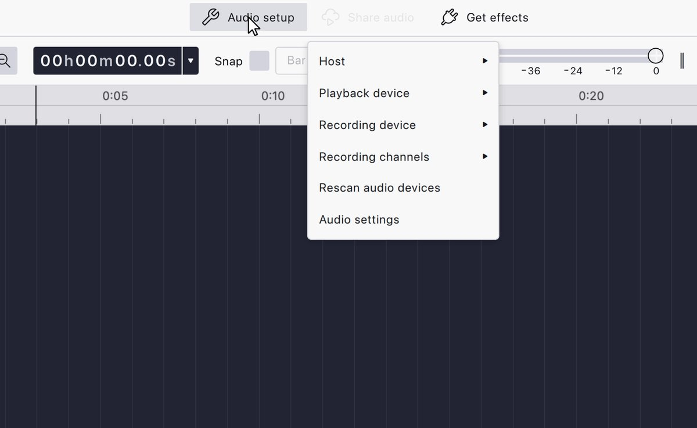
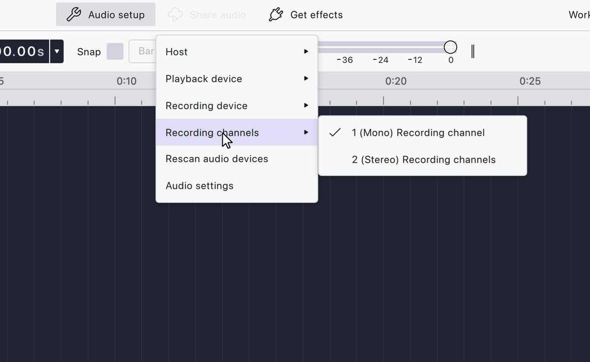
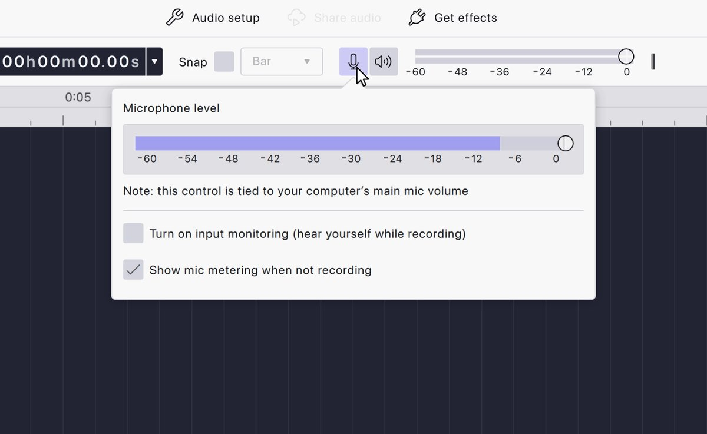
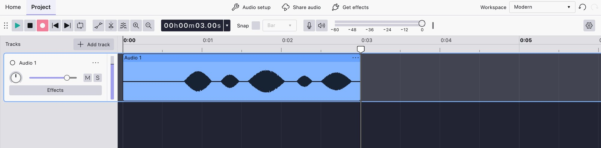
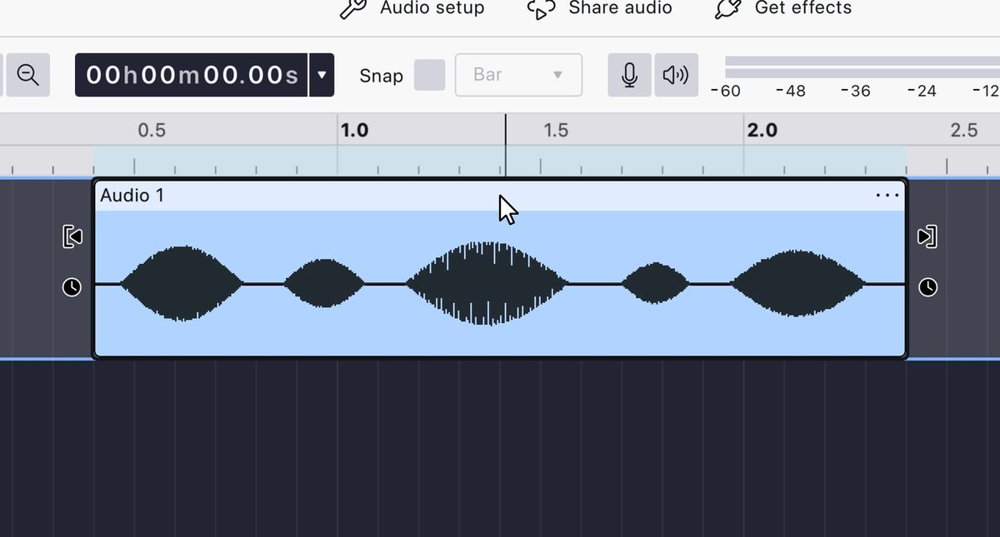
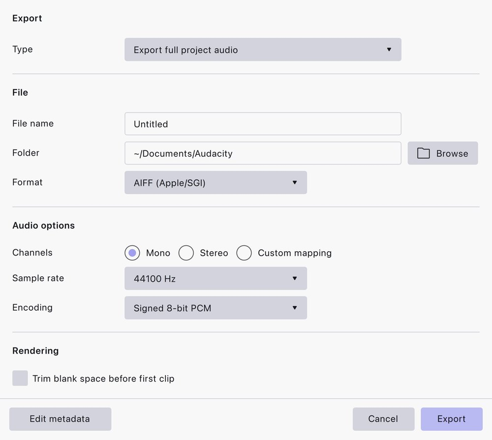

No licence, no account.
Audacity is free software. Download it from the official site; there is no subscription and no login.
FIRST VISIT
PedalBoard has a full English and Chinese interface. Pick one now — you can switch it in the header at any time.
AUDACITY BEGINNER GUIDE
PedalBoard can send its processed guitar to a virtual output. Audacity can record that output, clean it up and export a WAV or MP3. This guide covers the whole route on Windows, with actual Audacity 4 screenshots.
01 — WHY AUDACITY
You do not need a full DAW to record a guitar take. Audacity records, edits, cleans and exports, and it runs on Windows, macOS and Linux.
Audacity is free software. Download it from the official site; there is no subscription and no login.
Record, trim, normalize, reduce noise, fade and export. The same project can become a WAV archive and an MP3 for sharing.
Avoid third-party mirrors and ad-wrapped installers. The official site also hosts the manual and the current release notes.
PedalBoard makes the sound; Audacity records it. Neither one installs the other, and VB-CABLE is a third piece you install separately.
02 — THE ROUTE
You monitor through headphones or an interface, and the same processed signal goes to CABLE. Audacity records CABLE Output, so the take includes every effect you hear.
VB-CABLE is Donationware by Vincent Burel and is not bundled with PedalBoard. Install it from vb-audio.com/Cable; reboot Windows after installation.
03 — STEP BY STEP
The screenshots below are from the official Audacity 4 manual and show the actual Audacity 4 interface. Menu names in a future version may move; the audio route stays the same.
1 — PREPARE
PedalBoard, Audacity and VB-CABLE are independent programs. PedalBoard never downloads or installs the other two. Install them yourself, from their official sites.
Third-party download pages often wrap the installer with ads or extra software. The official URL is https://www.audacityteam.org/ — the download page is /download/windows/ and the manual is /manual/.
2 — PEDALBOARD OUTPUT
In PedalBoard, open Devices and confirm that the monitor device is your headphones or interface. Turn VIRTUAL OUT on. The CABLE meter should move when you play, and the MONITOR meter should move at the same time.

 ACTUAL UI
1
2
ACTUAL UI
1
2
CABLE is the recording path. If you monitor through it, you add latency and you may hear nothing. Monitor through the interface and let Audacity take CABLE Output.
3 — AUDACITY SETUP
Open Audacity. In Audacity 4 the audio controls live under Audio setup in the top toolbar. You can pick the host and the recording device directly from this menu, or open Audio settings for the full panel.

ACTUAL AUDACITY 4 UI 1 2 3 4Audio setup → Host → Windows WASAPI. WASAPI is the modern Windows path and the one that sees CABLE Output with the least latency. MME works as a fallback but is slower.
Audio setup → Recording device → CABLE Output (VB-Audio Virtual Cable). If it is not in the list, click Rescan audio devices. The device only appears after VB-CABLE has been installed and Windows restarted.
Audio setup → Recording channels → 2 (Stereo). Open Audio settings and set the project/sample rate to 48000 Hz, matching PedalBoard. If the panel offers no project-rate control, set the export sample rate to 48000 Hz later.

ACTUAL AUDACITY 4 UI 1 24 — LEVEL
The recording path has its own level. Play your loudest part and watch Audacity's recording meter; aim for peaks around −12 to −6 dBFS. If it stays near −60, the CABLE signal is not arriving; if it touches 0, it is clipping.

ACTUAL AUDACITY 4 UI 1 2 3If speakers play the guitar while the interface microphone or guitar pickup is open, you will record the room and create feedback. Headphones remove that loop entirely.
5 — RECORD

ACTUAL AUDACITY 4 UI6 — EDIT
A raw take is allowed to be rough. Do the small set of edits below and stop; over-processing is how a guitar starts sounding like a phone recording.

ACTUAL AUDACITY 4 UI 1 27 — EXPORT
Use File → Export Audio. Choose WAV with 24-bit PCM if you may edit or master the take later; choose MP3 at 192–320 kbps if you are sending it to someone. Set the sample rate to 48000 Hz to match PedalBoard.

ACTUAL AUDACITY 4 UI 1 2 3 4Save the project itself with File → Save Project (it becomes an .aup3 file). The project keeps the tracks and edits; the exported WAV/MP3 is the finished file. Keep both if the take matters.
8 — CHEAT SHEET
| Setting | Value | Why |
|---|---|---|
| PedalBoard monitor | Headphones / interface | Low latency; no feedback. |
| PedalBoard VIRTUAL OUT | On | Feeds CABLE Input. |
| Audacity host | Windows WASAPI | Sees CABLE Output; modern Windows path. |
| Recording device | CABLE Output | The receiving end of the virtual cable. |
| Channels | 2 (Stereo) | Keeps stereo modulation, delay and reverb. |
| Sample rate | 48000 Hz | Matches PedalBoard and the cable. |
| Recording peaks | −12 to −6 dBFS | Headroom without noise. |
| Input monitoring | Off | You already monitor through PedalBoard. |
| Project file | .aup3 | Keeps tracks and edits for later. |
| Archive export | WAV 24-bit | Lossless, good for further editing. |
| Sharing export | MP3 192–320 kbps | Small file, good enough for listening. |
9 — TROUBLESHOOTING
Check three things in order: PedalBoard's VIRTUAL OUT is on and its CABLE meter moves; Audacity's recording device is CABLE Output, not the microphone; Audacity's host is Windows WASAPI. If the CABLE meter in PedalBoard is also dead, the virtual cable is not running.
Install VB-CABLE from vb-audio.com/Cable, reboot Windows, then press Rescan audio devices in Audacity. Also check Windows Sound settings that CABLE Input exists as a playback device. If Audacity was open during installation, restart it.
You are monitoring through both PedalBoard and Audacity. Turn off input monitoring in Audacity, or mute the Audacity track while recording. Keep one monitoring path only.
Raise PedalBoard's buffer to 256 or 512, close CPU-heavy apps, and match 48000 Hz everywhere. A USB hub or a long cable can also cause dropouts. Check PedalBoard's dropped-block counter while recording.
Set Recording channels to 2 (Stereo) and confirm PedalBoard's output is stereo. If the source is mono by design, record mono on purpose; do not leave a stereo track with one dead side.
That is feedback. Wear headphones, move the guitar away from speakers, and turn off input monitoring in Audacity. A pickup near a speaker will always find the loop.
Normalize the track to −1 dB before exporting. If it is still quiet, the recording level was low; raising the export volume afterwards also raises the noise. Fix it at the input next time.
No. Audacity is a separate open-source project. PedalBoard does not bundle it, install it, or modify it. The same is true of VB-CABLE. Download each from its official site.
Yes, but then Audacity records your interface input directly, so PedalBoard's effects are not included. You would need to reamp later or use your interface's own loopback if it has one. For a processed guitar take, use the CABLE route.
Audacity 4 moved the interface to Qt, and menu names can change between minor versions. Use the official manual linked below for your exact version. The recording route (WASAPI → CABLE Output → stereo → 48 kHz) does not change.
10 — OFFICIAL LINKS
Audacity's official website is https://www.audacityteam.org/. The manual, download page and release notes all live under that domain. VB-CABLE is a separate site.
The Audacity screenshots on this page are from the official Audacity 4 manual at audacityteam.org/manual, used to document the actual interface. Audacity is a separate open-source project and is not affiliated with PedalBoard.